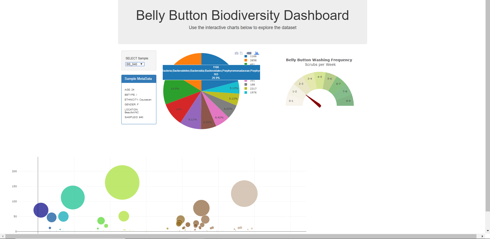
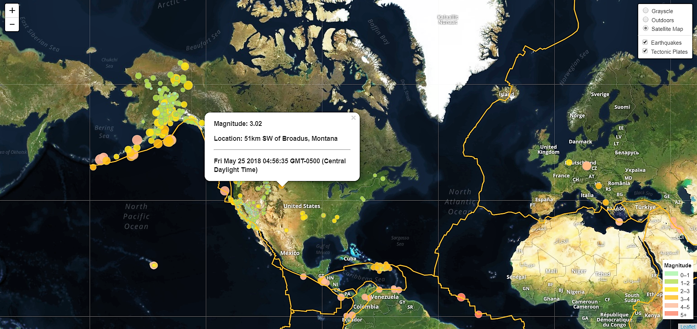
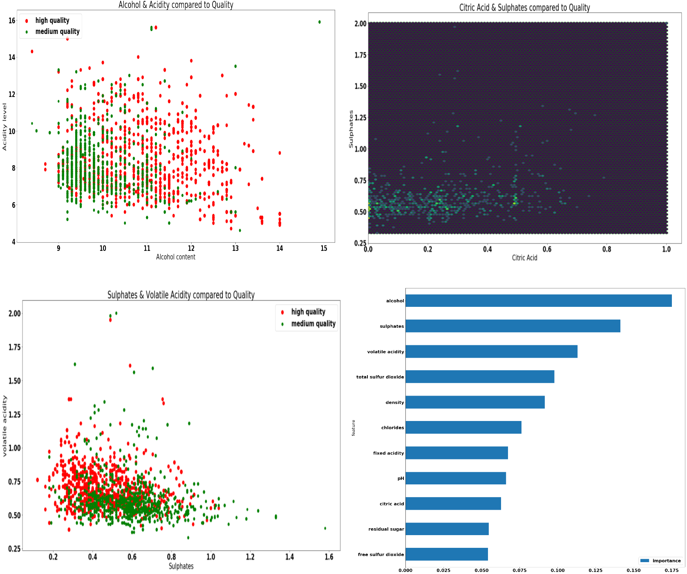
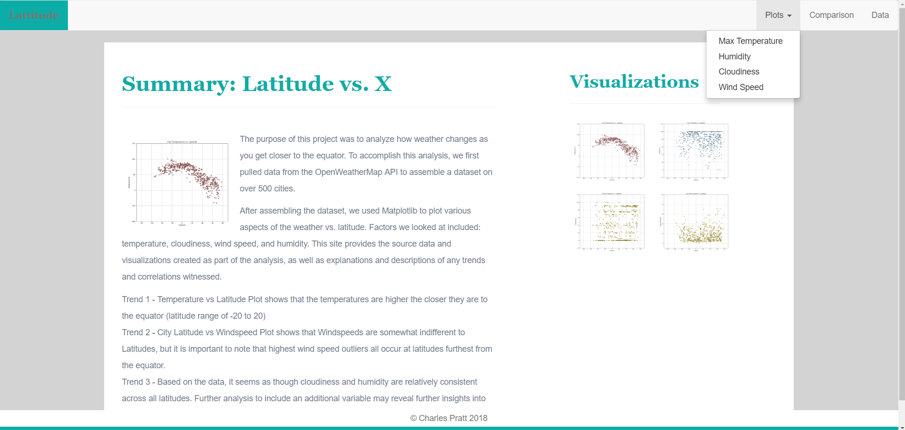
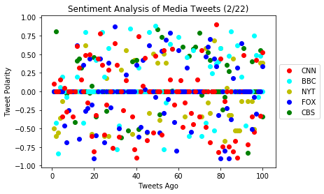
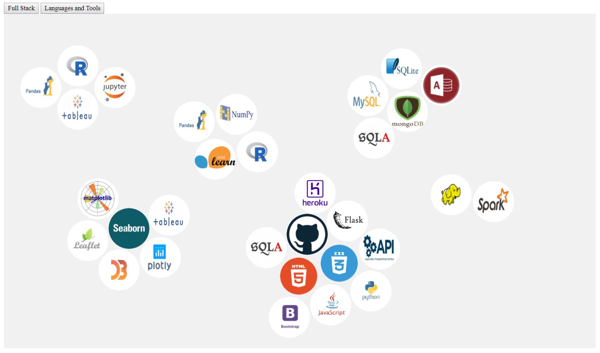

Charles Pratt
Projects
Skills
Resume
Projects
    
Links
Python with Flask - Biodiversity
Earthquakes with Leaflet
In "Vinho Verde" Veritas
Weather Analysis Dashboard
Tweepy News Sentiments
D3 Force Bubble Chart
